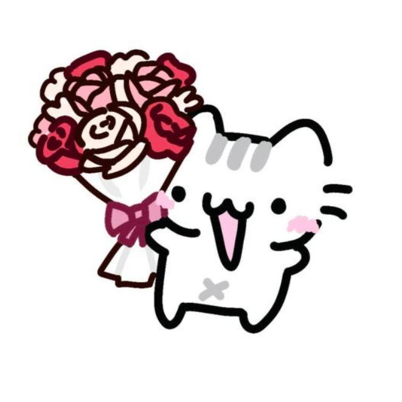
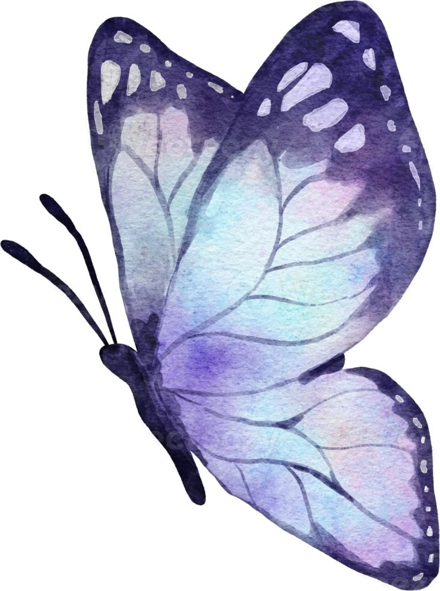
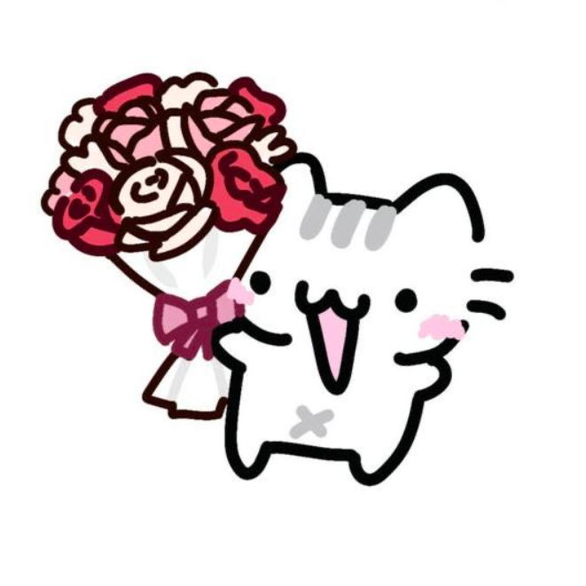
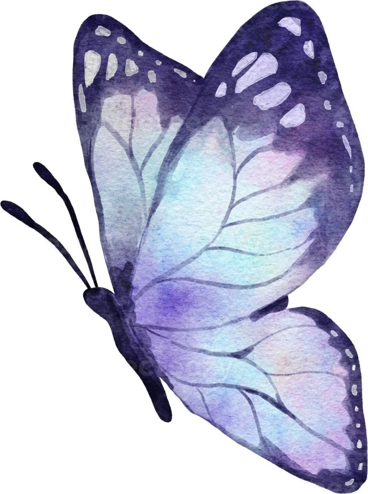
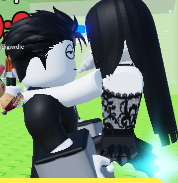
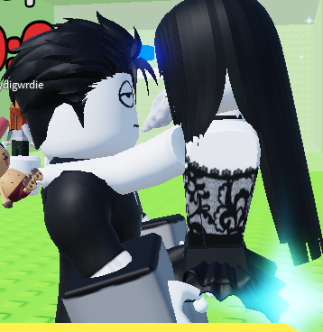
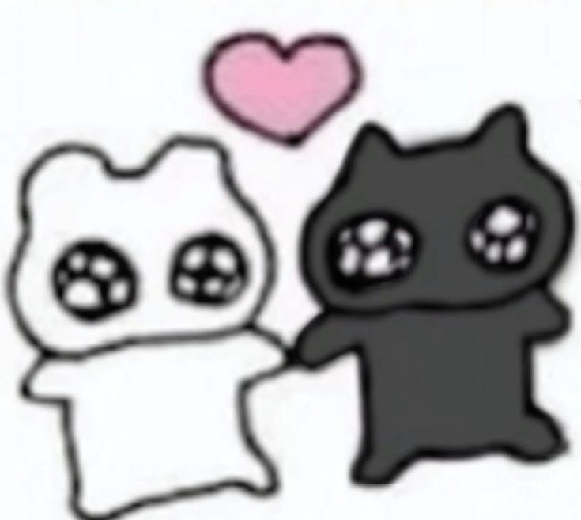
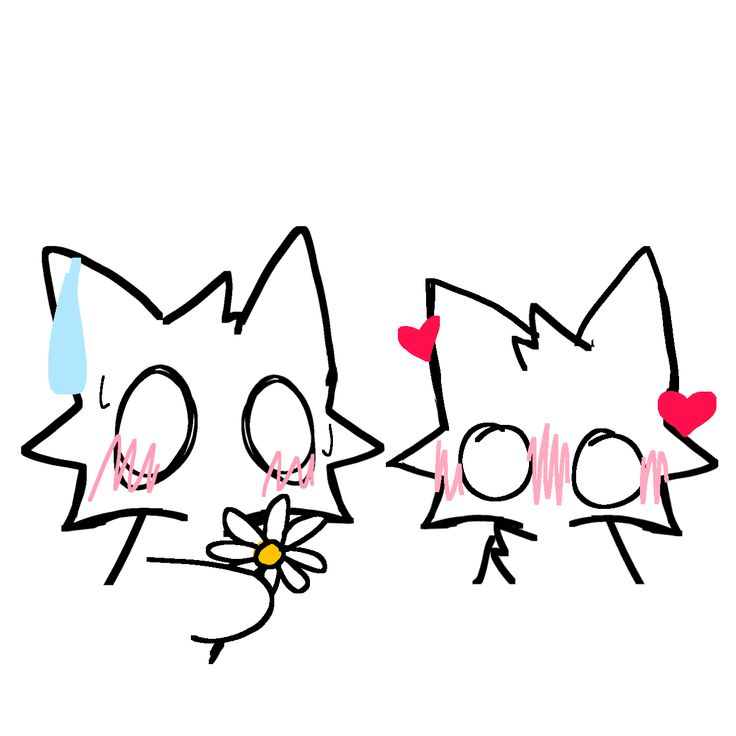

 


💖 Te amo 💖
Buenas, para empezar ni se que decir acá la vdd ando en blanco quiero chillar y todo eso pero pos que dire? Que te amo? Pos ya lo sabes que si te amo y mucho y también le quiero pedir perdón por todo lo que digo sin saber como decirlo y solo decirlo así como cae perdóneme por eso pero pos paciencia ya no tengo y no tienes la culpa de eso tu ni nada,pero te amo mucho quiero que seas tu solo tenia planeado otra cosa en mente esto de la pagina lo hice noc le quería pedir que fuéramos algo mas si pero si quiero y todo pero no se como sea esto porque vea como hemos estado últimamente desde que paso lo de la ultima vez no hemos estado como antes no es escusa para que no se lo pide yac pero quiero que estemos bien bien al 100 no solo un ratito si no siempre para siempre no quiero que este seca no m gusta por eso luego contesto seco porque tu lo haces y me siento mal por eso. Siento que aveces ni soy suficiente que caigo mal a todos quizás y pienses que soy raro también o noc pero a pesar de todo eso te amo ati y solo tu aveces no quisiera que estuviéramos peleados y así que estuviéramos bien pero pos es mi culpa todo esto por lo que digo y no debo de decirlo así también aveces cuando me dice cosas bonitas y así no se que decir porque no se me expresar no es porque no quiera decir algo solo que me cuesta mucho expresar así cosas me cuesta mucho no lo hago para que se sienta mal ni nada, me duele que te haga daño me duele que llores por mi culpa me duele mucho me lastimo yo solo por lo mismo, me cuesta decir todo esto no corita escribiéndolo siento que no es na desvio feo el tema noc que decir pero te amo mucho la verdad solo quiero que seas tu y tu ya no hay que estar mal porque tengo miedito de perderte y no saber más aunque a veces creo que por mi si estas peor por mi y ya a veces pienso de irme pero no lo hago porque quiero seguir contigo pero te hago mal pero te amo pero acá seguiré todavía hasta que me digas ya hasta aquí definitivamente, pero haciendo de lado esto te quiero abrazar y llorar en tu hombro y disculparme por todo quiero decirte que te amo en persona, todavía quiero seguir aprendiendo cosas contigo así como de las cosas que me dices y me explicas porque no sabia quiero seguir aprendiendo de todo así como del amor contigo quiero que solo seas tú, me desvío de todo porque escribo y paro de escribir y escribo y empiezo con otra tema xd, pero creo que ya es todo no me sale mas palabras solo quiero que sepas que te amo te adoro te quiero te quiero dar besos quiero todo contigo te amo un montón la verdad no me salen mas palabras srry, pero de todos los recuerdo que tengo tu eres el mas mas mas bonito que tengo y tendré pa siempre.
Este boton iba a funcionar pero ya no se que se hacia para que saliera con el otro pero era para decirle..... SIGA BAJANDO C:
¿¿¿¿QUIERE SER MI SAN VALENTIN/PROMETIDA/NOVILIGUE/EL AMOR DE MI VIDA/YA TU SABES NV TODAVIA AWANTA PERO LO ANTES DE ESO????
DIGA QUE SI, SI NO LLORO